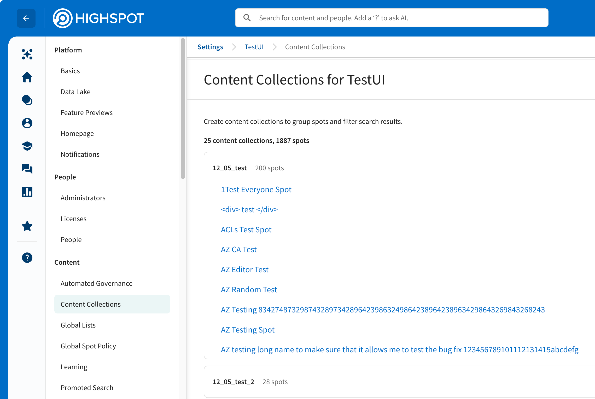
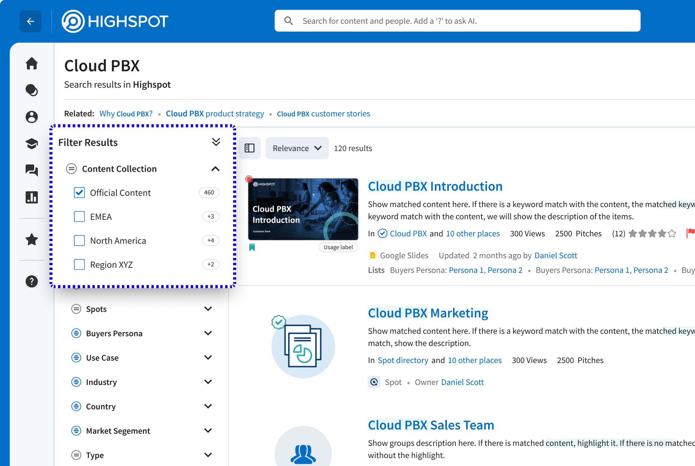

Existing filters were too granular for how enterprise reps think about content

Content Collections as promoted filters in the search results page
Content Collections: a new construct for organizing and filtering content
Since existing filters were too many and too granular to be useful, the solution required a construct one level up: something that would first group content into meaningful areas, then allow filtering by that group. To make scoped search possible, we introduced content collections, an admin-defined grouping of related spots. Once an admin configures a collection, item-to-collection association becomes automatic.
Collections map naturally to how large organisations already think: by sub-org, product line, or region. This gives reps a useful construct for limiting search results to the content area most relevant to their role.

Early exploration — two interaction models
Two interaction models. One dropdown that couldn't hold both.
I explored two distinct models for how a rep could limit search results to a content area. Both were valid — but each had a real cost, and a single dropdown couldn't cleanly support both.
Scope before the query — in the search dropdown
The user selects a content collection before typing. The scoping interaction happens in the dropdown. The platform supports up to 50 collections, which meant the dropdown needed to accommodate a potentially large selection set — and the interaction patterns required to make that work cleanly made the dropdown more complex than the search experience it aimed to simplify.
Filter after the query — on the search results page
The user submits a query first, then filters results by collection using sidebar filters or tabs on the results page. The available filter options depend on what the search returns, not on what the user intended to search within.
Most sales reps will frequently engage with 1–3 collections
The team returned to customers with a focused question: how many collections do users actually have access to, and how many do they use when searching?
The data showed that users with access to many collections consistently engaged with only 1–3. This finding established the core design principle for the interaction: make frequent tasks easy, and less frequent tasks possible.

Promoted collections in the search dropdown

Collection filter in the results sidebar
An opportunity to modernize the search experience
The search dropdown goes through multiple states in a matter of seconds. The existing experience felt clunky because the dropdown disappeared entirely while suggestions were loading, breaking the user's sense of continuity.
In addition to solving the scoping problem, I saw an opportunity to modernize the interaction with the goal of a seamless experience. Because every keystroke changes what the dropdown should show, I broke the interaction into distinct states to identify the most relevant information to surface at each point. Stitching those states together with deliberate transitions makes the interaction feel responsive and smooth throughout.
Rest — no interaction has happened yet
The search bar is visible and discoverable. The design goal is to make search easy to find and invite interaction without introducing distraction.
Zero state — the user has clicked in
Intent is unknown. The dropdown surfaces recent searches to give the user a fast path back to queries they have already run.
Auto-suggest — the user is actively typing
The dropdown surfaces keyword and entity suggestions that update with every keystroke. Transitions need to be smooth enough that the surface feels continuously responsive.
End state — the user has submitted a query
The dropdown displays search results in this state. The design provides clear affordances for adjusting the query, changing the scope, or starting a new search with minimal steps.
Engineering handoff: An interactive prototype
I delivered a Figma prototype covering every micro-interaction and state transition, giving engineering an unambiguous reference for the quality of experience the design required. The prototype embedded below shows what I handed off to engineering as the implementation spec.
Fully-working prototype of the search dropdown